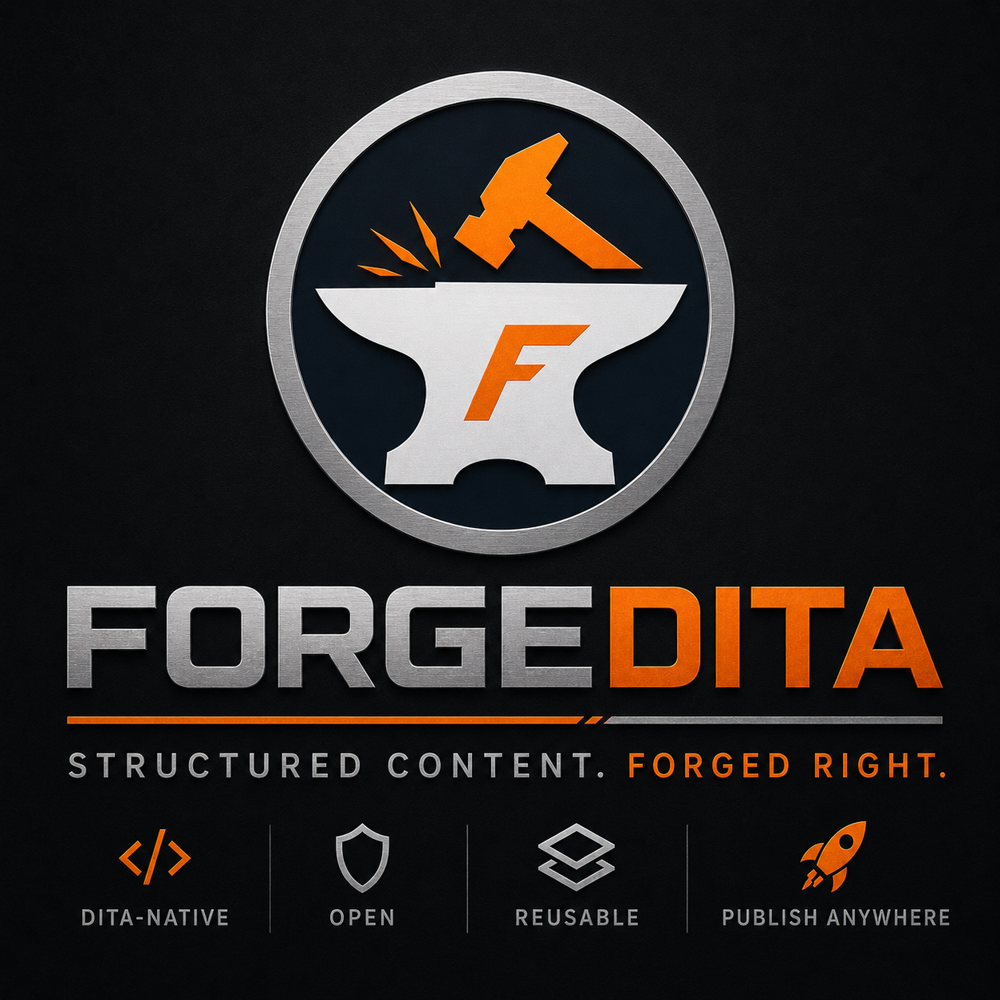

Native XML
DITA remains the authoritative content representation and exports cleanly.

DITA-native. Oxygen-first. Evidence-led.
ForgeDITA is a standards-first CCMS in active beta for teams that need native XML, contextual DITA semantics, reproducible publishing, and clear operational evidence.

Active beta: MVP and core beta foundations are complete. Current work focuses on production Oxygen acceptance, DITA interoperability depth, and evaluation readiness. See current status.
The operating principle
A CCMS should make content state, processing behavior, and release evidence easier to understand as the environment grows. ForgeDITA is designed around explicit contracts rather than accumulated convention.
DITA remains the authoritative content representation and exports cleanly.
Keys, reuse, maps, filters, and specializations are modeled as declared relationships.
Baselines, toolchains, profiles, manifests, and artifacts remain attributable.
Oxygen is a first-class client over APIs that remain available to other tools.
Inspectable by design
ForgeDITA publishes its architecture, conformance boundary, current status, and illustrative evidence formats. The public material distinguishes implemented beta behavior from the complete architectural target.
Bounded DITA 1.3 claims with partial and unsupported areas kept visible.
Validation, workflow, toolchains, and publishing outcomes preserve their sources and states.
Content and tenant-owned processing assets remain part of the exit path.
Evaluate the model
Review the public claim boundary and evidence strategy.
See what is implemented, under evaluation, and not claimed.
Use seven practical demonstrations to expose architecture.
Understand the operating experience behind ForgeDITA.
From the blog
Publishing
Why DITA publishing environments drift, why procedural discipline cannot fully contain the problem, and how versioned toolchains restore control.
Conformance
A practical model for specific, testable, versioned DITA conformance claims that include limitations instead of hiding them.
Portability
Native XML is necessary for portability, but catalogs, grammars, plugins, semantics, and publishing profiles also determine whether content can actually move.
Beta evaluation
ForgeDITA is in active beta with teams and practitioners who care about native XML, reproducible publishing, explicit semantics, and maintainable operations.
Request beta access